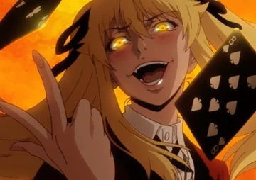

Mary Saotome (早さ乙おと女め芽め亜あ里り Saotome Meari) é uma das deutaragonistas de Kakegurui e também a principal protagonista do mangá spin-off Kakegurui Twin. Ela é uma estudante na Escola Particular Hyakkao e colega de classe de Ryota Suzui e Yumeko Jabami; ela foi a primeira a apostar e perder contra ela.
Mary é uma jovem garota de estatura mediana e corpo magro, descrito como sendo "sem curvas atrativas"–é chamada de "sem peito" por seus colegas de classe depois de ter se tornado um bicho de estimação. Ela possui longos cabelos longos onde a franja é repicada logo acima dos olhos e dividida em três partes, cobrindo sua testa ao meio, e duas mechas logo acima de seu busto, enquanto o resto é amarrado em dois rabos de cavalo gêmeos com fitas pretas (mesmo quando criança, utilizava o mesmo penteado) e olhos amarelos num tom escuro que brilham em dourado em certos momentos. Suas unhas são pintadas de rosa pálido. Ela utiliza o uniforme feminino padrão de Hyakkao que consiste em uma camisa de manga longa branca junto de uma gravata cruzada preta, blazer vermelho com botões dourados, saia cinza, meias pretas na altura da panturrilha e sapatos marrons. Enquanto era uma "vira-lata", utilizava a identificação em seu pescoço. Quando estava administrando o salão de apostas em seu primeiro dia, ela utilizou um vestido curto de empregada preto com babado branco, um avental da mesma cor com um grande laço nas costas e um laço no pescoço junto com meias altas brancas e sapatos Mary Jane com um pequeno salto escuros. Manteve seu penteado com laços pretos, mas com uma tiara branca.

No início, Mary mostra-se incrivelmente sádica e convencida, bem demonstrado pela forma como ela tratava Ryota, seu colega de classe, depois que ele se transformou em um "bicho de estimação", devido ao seu baixo status social na escola e cruelmente provocava seus oponentes durante as apostas. Mary também é extremamente egoísta dentro e fora das partidas, muitas vezes confiando em sua própria vitória. Depois de perder para Yumeko e experimentar a vida como um bicho de estimação, Mary ficou desesperada para recuperar seu status na academia, sem ter outro objetivo em mente. Logo depois de ser humilhada por Yuriko Nishinotoin numa partida oficial, Mary acaba perdendo seu orgulho e caindo num estado de tristeza e vergonha. Depois de recuperar seu status, ela parece não ser mais tão arrogante e cruel, às vezes sendo apenas incomodada pela covardia de Ryota ou pelo comportamento imprudente de Yumeko, mas ainda se preocupando profundamente com eles conforme foi desenvolvendo laços com ambos. Ela também desenvolveu um enorme ódio contra o Grêmio Estudantil, desejando que eles pagassem pelo que haviam feito com os bichos de estimação. A família de Mary não é rica e ela está frequentando a Escola Particular Hyakkao com uma bolsa de estudos. Seu objetivo sempre foi tornar-se uma verdadeira vencedora na vida, um caso importante até para seus próprios pais, que a incentivaram desde cedo a fazer amizade com crianças mais ricas. Ela se orgulha de suas habilidades de inteligência e jogo, e odeia quando as pessoas a desprezam apenas por seu status financeiro. Durante seu primeiro ano, ela também é visivelmente menos cruel, implicitando que desenvolveu esse comportamento para suprimir seus sentimentos em relação à falta de Tsuzura Hanatemari na escola. Mary é bastante inteligente e capaz de deduzir as trapaças utilizadas em jogos, como conseguiu facilmente saber sobre o truque utilizado tanto por Kokoro Aiura quanto Mikura Sado, mesmo sendo um tanto difíceis de se perceber. Quanto ao que se diz sobre notas acadêmicas, ela estuda todos os dias e também ajudou Tsuzura nos testes.
VOLTAR